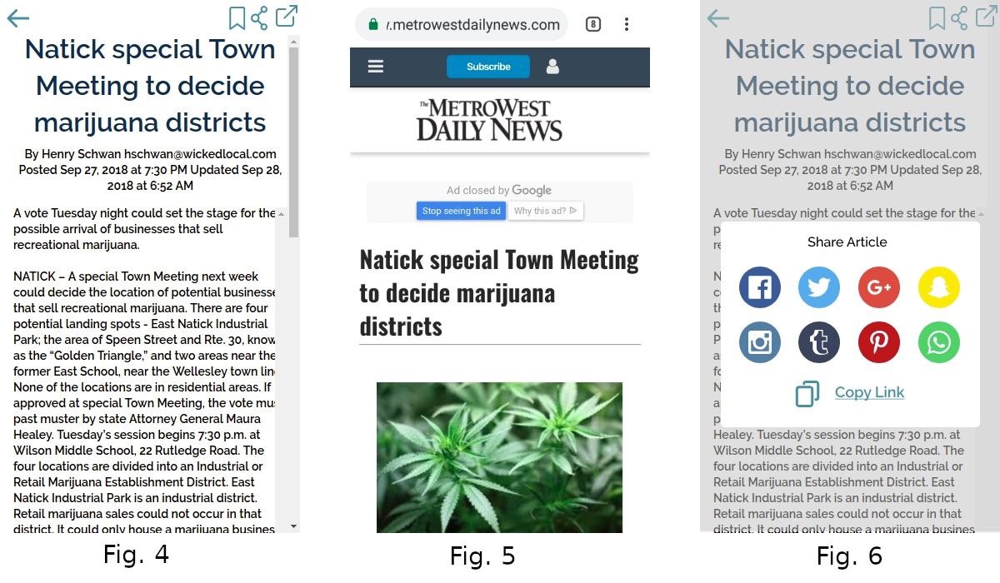
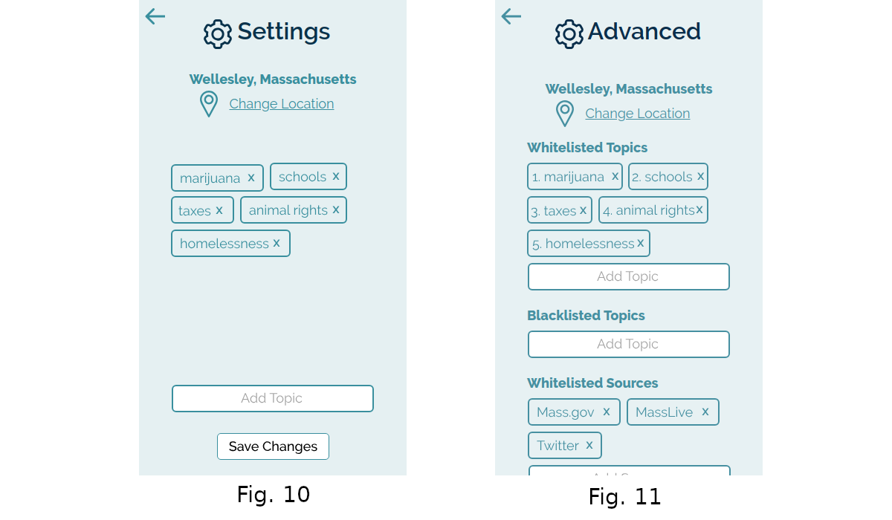

Design Refinement Report
What is your design? How does it work?
Local News Now is an app that aggregates local civic news based on location (required), user preferences (optional), and a machine-learning algorithm. The target user is college students who want to increase civic awareness and stay up-to-date with current local news. The purpose of the app is to lower the barriers to entry to civic awareness by providing a low activation energy system that displays credible information relevant to the user, while still allowing more experienced users the autonomy to indicate topics of interest and trusted sources.

When the user opens the app for the first time, they are greeted with a welcome screen (Fig. 1) before being asked if they want to use their current location (if their location is turned on) or to select or enter a location of choice (Fig. 2). The next screen is their feed (Fig. 3), which now contains a list of trending articles relevant to that location.
Clicking on an article brings the user to an intermediate page (Fig. 4) that contains the article in plain text. From here, the user can follow an external link to the original article, post, etc. (Fig. 5) or share the article via another app (Fig. 6).

The user has the option to “rate” each article with a thumbs up or thumbs down (Fig. 7), which the algorithm uses to determine what topics from what sources to show in what order. From the feed, the user can also swipe right to “like” and bookmark an article (Fig. 8) or swipe left to “dislike” and remove it (Fig. 9). At the end of each article is a list, much like in the feed, of related articles that the user can click on to view in the same intermediate page layout (Fig. 7).
From the feed, the user can navigate to the settings screen (Fig. 10). Here, the user can change their location as well as indicate their preferences by dragging trending topics into a ranked list. The provided topics to rank are based on location and popularity, and is updated as the user continues interacting with articles, drawing from statistics from similar users. The user can also go into the advanced settings (Fig. 11) to explicitly whitelist (increase priority of) or blacklist (completely remove) a topic or source. All other topics and sources are fair game and their frequency of appearance is calculated by the algorithm.
To specifically search for a topic or news source, the user can follow the source or the hashtags at the bottom of each article preview in the feed (Fig. 3). They can also search for it using the search bar (Fig. 3).
What changed, and why did you change it?
In response to the heuristic evaluation feedback as well as team-internal deliberations, we changed the structure of a few key features between our original paper prototype and our proposed final design.
One major change was the removal of the user profile creation that set the stage for our paper prototype interaction. Instead of asking for topic and source selection during the initial interaction, the app now only requires a location. The other preferences can only be explicitly set in settings. This change was implemented in response to the confusion many testers expressed over the placement and layout of the profile creation screens. Its position at the beginning of the user interaction created a jarring effect that distorted the purpose and goals of the app and forced the user into an unnecessary commitment, albeit modifiable, to topics and sources before even interacting with the rest of the app.
The second major change was the shift in emphasis from strict user selection to algorithmic suggestions combined with optional user preferences. This was in part a result of the grounding behind the removal of the initial user profile creation. However, we also realized that our original design required too much recall on the user’s part, as most of the article recommendations relied on the user’s selection of topics and sources. As much as we wanted to encourage user autonomy, this methodology also severely limited the scope and diversity of the feed. The algorithm, with the help of the “like” and “dislike” functionality, now provides a range of suggestions while lowering the activation energy required to browse and find new articles, topics, and sources by automatically updating preferences. This much better reflects the needs of our target users and the purpose of our app.
With that same reasoning, we changed the topic and source selection method in the settings. Instead of adding or deleting topics and sources, which requires recall, the main settings screen now provides trending topics for the user to drag into a ranked list. There is, however, an advanced settings screen (Fig. 11) where users can specifically whitelist and blacklist topics in order to allow user control and freedom for more experienced users.
We also made minor changes such as using more intuitive icons, adding a floating menu bar over the article, and standardizing terminology in order to increase efficiency and ease of use, consistency, and visibility of system status, among other heuristics, based on tester feedback.
What (if any) key insights did you gain during this phase?
User experience does not always reflect designer vision. We as designers have a good idea of all the interactions we put into the design after weeks of working on it. However, a new user who is experiencing our app for the first time doesn’t know what to expect. As a result, the link between the profile creation screens and the feed, for example, doesn’t seem as obvious to them as it did to us. The user does not know what the feed is from their limited exposure to the app, let alone the choices they make in the profile creation will affect the results in their feed. Designers are heavily biased because they are able to see the top level view of the design, but they must design for a user who is seeing it for the first time, and chronologically.
While it is difficult and somewhat unintuitive to black box a design when the whole point of designing is to lay out the look and function of a design, it is sometimes necessary for a user experience designer. In user experience design, it is all about the user’s interaction with the interface. It is unnecessary in many cases to go into detail about how the backend of the system works. Exposing the wires, so to speak, of a design may give users the freedom and opportunity to make full use of the tool (e.g. explicit selection of news sources), but it often confuses the user by distracting them from the more relevant features of the design, as evidenced by our user tests.
Too much autonomy, especially during initial stages of interaction, can actually take away control from a user. They do not yet have the experience or knowledge of the design to make full use of the tool. As a result, they might stick to what they know from their initial profile creation and may be too overwhelmed to explore the different options for adding and removing topics and sources later on. Instead, with black-boxed guidance, the user can gain the experience needed to create their own filters after seeing for themselves how their choices in articles are reflected in their feed results.
What questions do you have now about your project? What shortcomings are you aware of?
We are exploring questions about how to best represent the user’s preferences, like topic or source preference. Although we have minor shortcomings with our tool (Figma) and its capabilities, we are mostly struggling with representing the user’s selections in an intuitive way. We are exploring concepts like bookmarking, ranking topics, and blacklisting topics.
We would like to investigate how this application can inform a user’s actions. We are exploring questions like, “How does this application do better or worse than ballot guide?” and “How can we measure the resulting action from user activity?”. Analyzing these questions would be tough, because we do not know what a user does beyond browsing the application.
We also identified a few shortcomings with our design due implementation complexity. For example, we do not allow very many interactions with handling articles in the feed. Users might benefit from more nuanced options, like reporting Bad Sources. Users also do not interact with other users in our app. We did not get around to incorporating social interactions like commenting on articles or messaging other users. This part may be especially helpful during voting season.
Lastly, we have not made the app flexible for a wide variety of use cases. We have not adapted this app to a desktop version or website, and the preferences get deleted once the user deletes the app. We also did not get to implement aggregation capabilities specific to voting season. If we had the time and resources, we would definitely implement that feature.